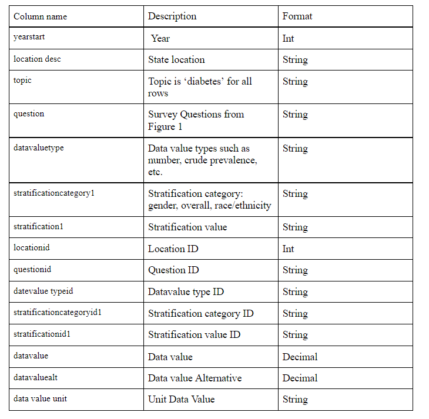
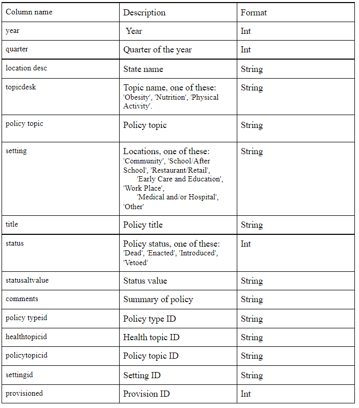
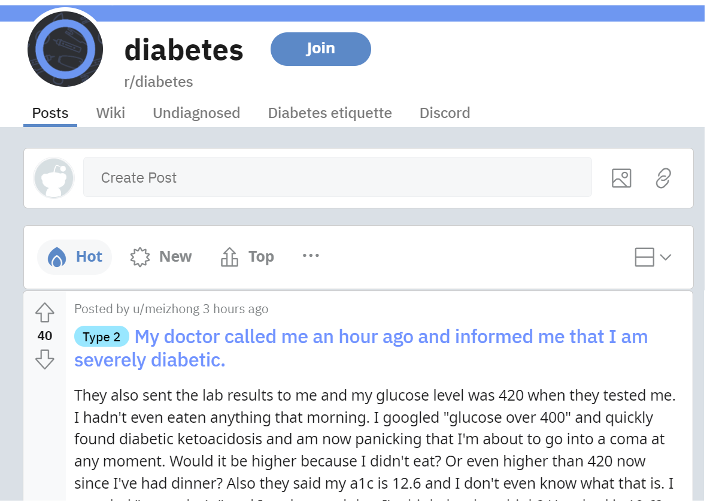
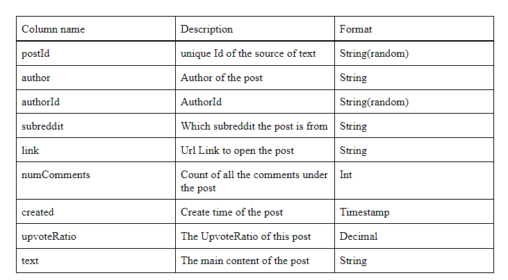
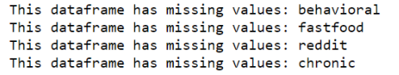
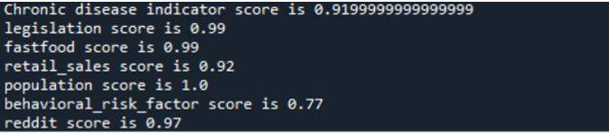

Data Collection and Preprocessing
Datasets
U.S. Chronic Disease Indicators: Diabetes
This original dataset is provided by CDC with 124 indicators that were developed by consensus that allows states to uniformly define, collect and report chronic disease data. The sub-category dataset focuses on diagnosed patients and their geolocations, age, and race information from 2010 to 2019
Nutrition, Physical Activity, Obesity Legislation
This dataset contains policy data for 50 US states and DC from 2001 to 2017. Data include information related to state legislation and regulations on nutrition, physical activity, and obesity in settings such as early care and education centers, restaurants, schools, workplaces, and others.
This dataset provides related policies with the status (dead, enacted, introduced, and vetoed) and their corresponding health topics. Potential research question includes: Identify some states that have a relatively high failure rate of passing theses policies, is there a specific setting (such as schools) that is more likely to pass such legislatures, which health topic is of most concerns in the legal sense, are states with higher diabetes rates taking more actions.
USDA Weekly Retail Food Sales
This is a weekly retail food sales series from 39 states by 10 product categories (including alcohol) provided by the US Department of Agriculture. This dataset can provide some insights into food consumption in different categories among states. We could investigate questions such as: is consuming more fruits and vegetables lead to lower diabetes rates? What are food consumption trends and the potential relations with government legislation?
Fast Food Restaurants Across America
This is a downloadable CSV file that has a list of over 10000 fast-food restaurants provided by Datafiniti’s Business Database. The dataset includes the restaurant’s address, city, state, name, and website. The file provides a sample (10000 restaurants) of a larger dataset. Potential research questions include fast-food restaurants per capita for all states, fast food restaurants with the most locations nationally, the number of fast-food restaurants per capita, and potential relationships with obesity rates and diabetes rates.
2021 U.S. Population by State
This dataset contains the U.S. population data in 2021, 2018, and 2010 and state density. It is rather an auxiliary dataset that might be useful to investigate the attributes of other datasets per capita.

Reddit Diabetes Posts and Comments
This dataset is crawled from Reddit. Many diabetes patients would like to make posts on reddit.com to share their experiences and provide support to each other. So we chose to crawl the posts in subreddits like ‘Diabetes,’ ‘Diabetes_t1,’ ‘Diabetes_t2,’ etc., to get the latest and real patient expressions about diabetes. We can do text analysis and network analysis to make some conclusions about attention and communities.
 Data Cleaning and Processing
To better launch the analysis, we need to clean the data sets. For duplicates, since only Reddit datasets have duplicates, the rows were simply removed. For specific datasets, unique values are also checked, and duplicates are removed. For null values, cases are different among datasets. Some of them are removed, and some are replaced with the value “0” as data imputation. For data consistency, we change all state abbreviations to their full name. Besides, for the convenience of machine learning with a lot of categorical data, we split certain columns into multiple columns, where each column contains the corresponding data value of one particular category.
We also use missing completeness and validity to measure the cleanliness of the datasets based on evaluation criteria (Elgabry, 2019). Data quality score is calculated by missing value detection and outlier detection.
For missing values, the total number of missing values in each column is divided by the number of rows to give the missing value percentage, and we take the mean of all the missing value percentages.
For noise detection, we use the difference between the third quartile and the first quartile to calculate the interquartile range, and calculate the lower bounds (Q1 - 1.5 * IQR) and upper bounds (Q3 + 1.5 * IQR). The final quality scores are calculated using 1 minus the missing score and noise score.
Data Original Sources
U.S. Chronic Disease Indicators
CDC Nutrition, Physical Activity, and Obesity Legislation
U.S. community survey on Nutrition, Physical Activity, and Obesity